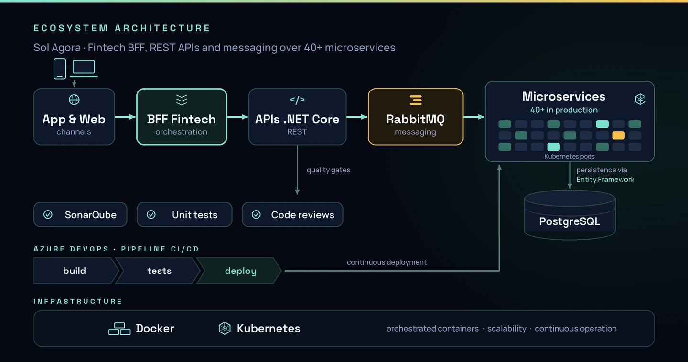

Back-end & APIs
C#, .NET Core, Node.js, Laravel, Entity Framework, RESTful APIs, WebSockets, JWT and Keycloak.
01Overview
I am a Computer Engineering graduate from FHO working as a Software Developer focused on the .NET ecosystem. My technical foundation was built on engineering, which gave me an analytical and structured approach to solving complex problems and building scalable applications.
My hands-on deepening in software development came through an intensive program, where I consolidated structural and architectural knowledge under the guidance of senior developers. That foundation allowed me to quickly take ownership of critical systems, working directly on the creation and evolution of a robust ecosystem of 40+ .NET Core microservices.
I have a systemic view of the application lifecycle. My experience ranges from database modeling and API building to CI/CD pipeline automation and container orchestration with Docker and Kubernetes. Most recently, I was the technical lead architecting and implementing an AI agent, structuring low-latency WebSocket communication and cloud infrastructure on AWS.
Day to day, I value code quality and security, applying Clean Code, SOLID principles and automated testing. I work well in collaborative environments and under agile methodologies, always aiming to deliver solutions that ensure technical stability and real business value.
02Technical Information
C#, .NET Core, Node.js, Laravel, Entity Framework, RESTful APIs, WebSockets, JWT and Keycloak.
AWS, Azure DevOps, Docker, Kubernetes, Nginx, CI/CD and deployment in distributed environments.
PostgreSQL, Redis, RabbitMQ, data modeling, query optimization and scalable persistence.
Clean Code, SOLID, SonarQube, unit and integration testing, Scrum, Kanban and code reviews.
03Experience
Client / project: Cursale
Architecture and implementation of a real-time AI agent supporting salespeople during calls. I built WebSocket communication, a Laravel backend, a Vue.js interface and infrastructure with Docker, Nginx and AWS.

Client / project: Sol Agora
Evolution of a corporate system, BFF for a fintech and APIs in an ecosystem with 40+ microservices. Working with .NET Core, Azure DevOps, Docker, Kubernetes, RabbitMQ and SonarQube, focusing on scalability and continuous delivery.
Recommendation letter — Overdrive CTO (PDF, in PT-BR)

Client / project: Sol Agora
Hands-on training in HTML, Git, C#/.NET and React, building three projects reviewed by senior developers. After the initial track, I worked on company projects with support from an experienced team.

04Featured projects
Two products that show my scope of work: back-end architecture, real-time integrations and interfaces connecting business, users and infrastructure.
Digital solar energy ecosystem powered by APIs, .NET Core microservices and continuous production operations with Docker, Kubernetes and Azure DevOps.
My role: back-end — evolving APIs, building a BFF for the fintech and maintaining business-critical microservices.
AI agent for real-time assistance during sales calls, with a Nuxt/Vue.js interface and WebSocket communication delivering instant insights to the operator.
My role: technical lead for architecture and implementation — Nuxt interface, real-time integration and AWS infrastructure. The product was discontinued by business decision; the full product-cycle experience stayed with me.


05Education
FHO - Fundação Hermínio Ometto
2019 - 2024Fortinet Certified Fundamentals in Cybersecurity
Cisco Networking Academy - Introduction to Cybersecurity
Technical English
06Contact
I'm open to new opportunities, projects and partnerships. Choose whichever channel you prefer — I reply quickly and it will be a pleasure to talk.